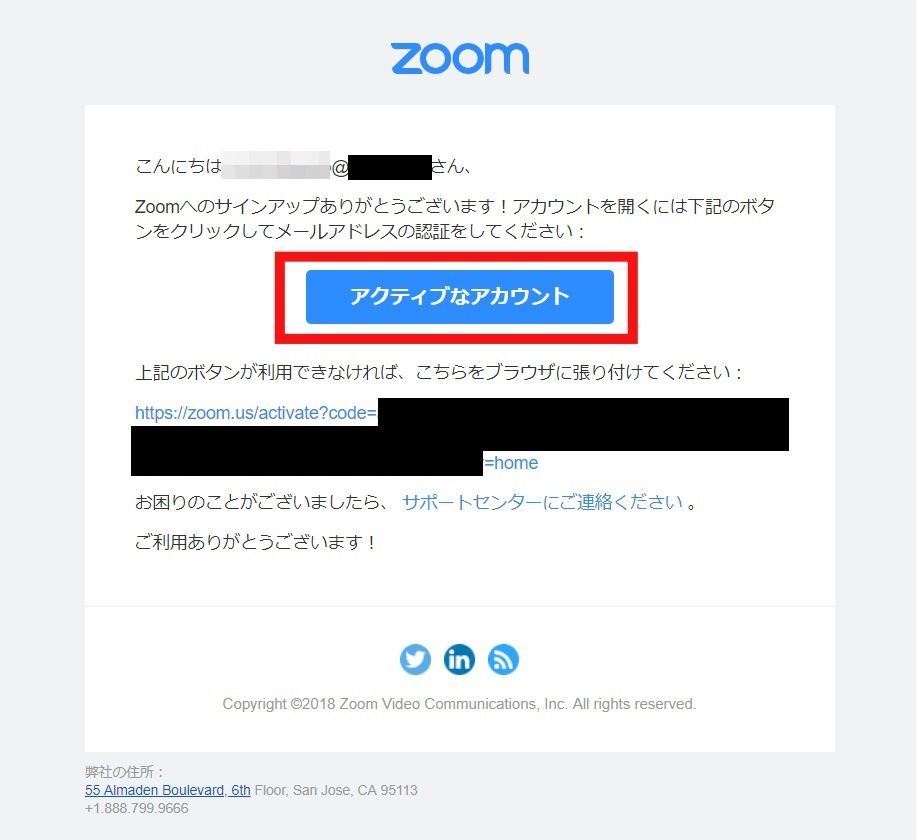

オンライン授業 教職員向け情報
zoomを使ったオンライン授業の進め方ついて説明します。
zoomを使ったオンライン授業を行なう際、ホストとしてミーティングを開催し、学生を招待して授業を行ないます。
ホストになるためには予めサインアップをしておく必要があります。
サインアップは一度だけ行えば大丈夫です。２回目以降は「ミーティングを開催する」から行うことができます。
◆サインアップの手順
以下にサインアップの手順を示します。
１．次のzoomのホームページにアクセスします。
https://zoom.us/
２．「サインアップは無料です」をクリックします。
３．「誕生日」を入力します。
４．「メールアドレス（〇〇〇@ssu.ac.jp）」を入力し、「サインアップ」をクリックします。
５．上記で登録したメールアドレスにzoomからメールが送られてくるので、「アクティベイトなアカウント」をクリックします。

６．表示された画面で、「姓」「名」「任意のパスワード」（2つとも同じもの）を入力し、「続ける」ボタンを押します。
７．「仲間を増やしましょう。」とありますが、ここは、特に登録は必要ありません。「手順をスキップする」の方を押します。
これで、サインアップが完了しました。
◆ミーティングの開催
ミーティングを開催するには、いろいろな開催方法があります。
以下に最も簡易的な「ミーティングを開催する手順」を示します。
１．次のzoomのホームページにアクセスします。
https://zoom.us/
２．①「ミーティングを開催する」をクリックします。
②「ビデオをオン」をクリックします。
３．①「〇〇〇@ssu.ac.jp メールアドレス」を入力します。
②「サインアップしたパスワード」を入力します。
４．「ミーティング」をクリックします。
５．「新しいミーティングをスケジュールする」をクリックします。
６．①「科目名など」を入力します。
②「第１回目の講義の日時」を入力します。
③ 授業前後の時間も含めて２時間程度を設定しましょう。
④「定期ミーティング」にチェックを入れましょう。
これにより毎週同じ｢URL＋パスワード｣のミーティングが開催できます。
つまり、毎週、学生に招待メールを送る必要がなくなります。
⑤「週ごと」「１週間」「授業の曜日」を設定しましょう。
７．① 授業の最終日を入力しましょう。
② 入室時にホストも参加者もビデオをオンに設定しましょう。
③ 音声はコンピュータ音声としましょう。
④ ここにチェックを入れておくと、入室時に参加者の音声をミュートに
できます。
ハウリングを防止することができます。
⑤ ここのチェックを外しておくと参加者は｢許可｣なしで自動入室します。
⑥ 最後に「保存」をクリックします。
８．「このミーティングを開始」をクリックします。
なお、次回以降は授業の時間になったら、サインイン→ミーティングで
ミーティングの一覧が表示されるので、右端の「開始」をクリックして
授業を始めましょう。
９．「リンクを開く」をクリックします。
10．「オーディオに参加」をクリックします。
11．画面下の「参加者の管理」をクリックします。
12．右の「参加者」の画面の下の「招待」をクリックします。

13．例えば「Gmail」をクリックします。
普段使っているメールを利用しましょう。

14．①「宛先」に受講学生のメールアドレスを入力します。
②「送信」をクリックして、「招待メール」を送ります。
15．右の「参加者」の画面で「許可」をクリックして入室を許可します。
16．適宜、授業を開始します。
授業が終了したら、
①画面下の「ミーティングを終了」をクリックします。
②「全員に対してミーティングを終了」をクリックします。